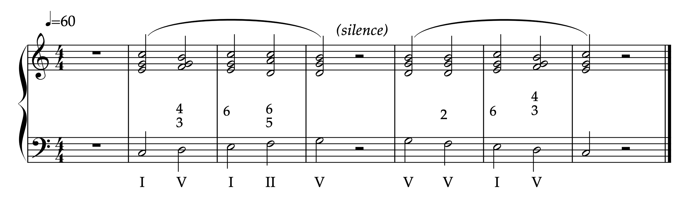

Demi-règle de l’octave
Quatre tonalités · Do, Sol, Ré, Fa

Jouez la demi-règle de l’octave dans les quatre tonalités — Do, Sol, Ré et Fa — en suivant le métronome.
Tempo initial : ♩ = 60 · Une mesure de préparation avant chaque tonalité.
Quatre tonalités · Do, Sol, Ré, Fa

Jouez la demi-règle de l’octave dans les quatre tonalités — Do, Sol, Ré et Fa — en suivant le métronome.
Tempo initial : ♩ = 60 · Une mesure de préparation avant chaque tonalité.